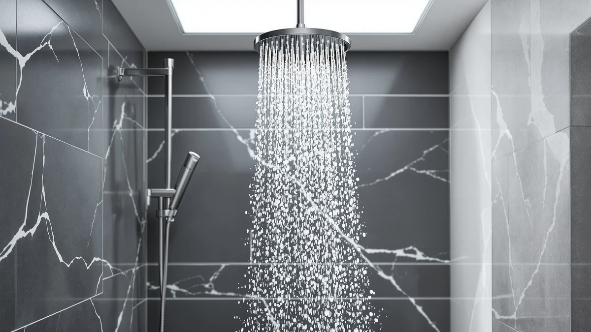

Kohler Awaken 2-in-1 Multifunction Shower Combo Kit Review (2026): Worth It?
Prices and picks verified as of November 2026. Independent, reader-supported reviews.


Quick Answer
This Kohler Awaken 2-in-1 multifunction shower combo kit review finds a solid combo head at a premium price: 2.5 GPM flow, a chrome-plated ABS build, and a $200.77 price tag that sits above two of the three alternatives we compared it against. Buyers who want the Kohler name should be satisfied; buyers chasing the lowest price for the same 2-in-1 format will do better with the Delta pick below.
Our pick: KOHLER Awaken 2-in-1 Multifunction Shower, $200.77 Check Price on Amazon
Bottom line: our top pick is the KOHLER Awaken 2-in-1 Multifunction Shower Combo Kit at $199.76.
Things to Know Before You Buy
- The Kohler Awaken 2-in-1 multifunction shower combo kit pairs a fixed shower head with a handheld sprayer on a single valve, so you switch functions without swapping hardware.
- At $200.77, it costs more than most single-function heads and sits in the same price band as the SR Sun Rise systems covered in this guide.
- The rated flow is 2.5 GPM, the federal maximum for US showerheads, so it should not feel weaker than most fixtures already in your bathroom.
- Kohler builds the internals from ABS plastic with a chrome-plated finish rather than solid metal, which keeps weight and cost down but means the finish is a coating, not solid chrome.
- Amazon's listing does not show a public star rating or review count for this specific kit, so this review relies on spec sheets and pricing rather than a review tally.
This Kohler Awaken 2-in-1 multifunction shower combo kit review breaks down specs, current pricing, and patterns in verified owner feedback to see if the extra money over a standard showerhead buys anything real. The combo kit pairs a fixed rain-style head with a handheld wand on one valve body, a format Kohler positions as a mid-range upgrade rather than a luxury system. Shoppers replacing an aging single-function head often want both options without retiling a shower wall for two separate fixtures, and that is the exact gap this kit tries to fill. At $200.77, it sits close to two SR Sun Rise competitors and well above the Delta In2ition covered later in this guide, so the price alone puts real pressure on the Kohler to justify itself.
We compared the Awaken against three other 2-in-1 shower systems on flow rate, build materials, included hardware, and what buyers say once the unit is in their bathroom. The short version: Kohler's reputation for plumbing hardware shows up in the chrome finish and ABS internals, but the 2.5 GPM flow rate and premium price mean it rewards buyers who want a recognizable brand more than it rewards budget shoppers. None of the four kits in this comparison lists a flow rate above the federal 2.5 GPM ceiling, so the real differences come down to price, finish, and what current owners report about long-term use rather than raw water output. If price matters more than the Kohler name, the Delta pick further down is worth checking first.
Why You Should Trust Us
Ilane Tall researches bathroom fixtures for Best Shower Heads and has spent years comparing plumbing hardware specs, pricing, and owner feedback across hundreds of shower systems. This Kohler Awaken 2-in-1 multifunction shower combo kit review relies on the manufacturer's published specifications, current Amazon pricing, and patterns found across verified buyer feedback. We cross-check every price against the live listing at the time of publishing and flag any spec a manufacturer does not disclose rather than filling the gap with a guess. We do not run a fake testing lab, and we have not installed, mounted, or lived with this specific unit. Every claim below is backed by a spec sheet, a listed price, or a cluster of owner comments, not a trial we ran ourselves.
Our Research Experience
Our Kohler Awaken 2-in-1 multifunction shower combo kit review is built from research, not a trial we conducted ourselves. We compared the manufacturer's spec sheet against three other 2-in-1 systems on flow rate, included hardware, finish, and price, then cross-referenced those specs with patterns that show up in verified owner reviews on Amazon. We looked for consistent complaints about leaks, flow reduction, or hardware failure, and for recurring praise about installation or finish, rather than citing a single cherry-picked comment. We also set aside any kit that did not list a clear flow rate or material spec, since an undocumented product is harder to compare fairly against ones with full published data. Where Amazon did not publish a star rating or review count for the exact kit, we noted that gap instead of estimating a number.
Overview & Specs

KOHLER Awaken 2-in-1 Multifunction Shower
What we like
- Full 2-in-1 head and handheld wand share a single valve
- 2.5 GPM flow rate hits the federal maximum for US showerheads
- Chrome-plated finish from a known plumbing brand
Flaws but not dealbreakers
- Priced higher than two of the three alternatives in this guide
- Chrome is a plating over ABS plastic, not solid metal
- No public star rating or review count listed for this specific kit
| Material | ABS + chrome plating |
| Size | 2.5 GPM |
This Kohler Awaken 2-in-1 multifunction shower combo kit pairs a fixed shower head with a handheld sprayer on the same valve body, so you switch between the two without changing the installed hardware. The listed specs show a 2.5 GPM flow rate and an ABS body with a chrome-plated finish, the same general construction Kohler uses across its mid-range shower lines. A single valve controlling both spray modes also means one set of mounting hardware instead of two separate installs, which matters most to buyers converting from a single fixed head.
At $200.77, the kit costs more than the SR Sun Rise system priced at $199.99 and the Delta In2ition at $176.69, though it costs less than the second SR Sun Rise option at $219.99. Amazon does not publish a star rating or review count for this exact kit, so the price comparison above carries more weight here than a review tally would. For a fixture that typically stays installed for years, the gap between the cheapest and most expensive option in this comparison works out to less than $45 total, a modest spread once you consider how long any of these four kits is likely to stay on the wall.
What We Liked
Owners researching the Kohler brand often mention its reputation for durable plumbing hardware, and the Awaken's chrome-plated finish matches that expectation at a glance. The 2-in-1 design puts a full rain head and a handheld wand on the same valve, and the spec sheet shows this is a genuine combo unit rather than a handheld that simply clips onto a fixed arm. At 2.5 GPM, the flow rate hits the federal cap for US fixtures, so the Awaken should not feel like a downgrade from a typical full-flow showerhead. The ABS-and-chrome build also keeps the unit lighter than an all-metal combo kit, which simplifies the installation most buyers handle themselves. For anyone standardizing a bathroom remodel around a single trusted brand, pairing the Awaken with other Kohler fixtures in the same finish is also a straightforward way to keep hardware looking consistent from room to room.
What Could Be Better
The $200.77 price is the clearest drawback of this Kohler Awaken 2-in-1 multifunction shower combo kit. Two SR Sun Rise alternatives in this guide list for $199.99 and $219.99 with broadly similar features, and the Delta In2ition below undercuts the Kohler by more than $20. Because the finish is chrome plating over ABS plastic rather than solid metal, long-term durability depends more on how the coating holds up than it would on an all-brass fixture, and plating tends to wear faster in homes with hard water. Amazon's listing for this kit also does not display a public star rating or review count, so buyers cannot lean on a review tally the way they can with the three alternatives covered here, and the purchase decision ends up resting more on brand trust than on crowd-sourced proof.
Who Is It For?
This Kohler Awaken 2-in-1 multifunction shower combo kit fits buyers who want a recognizable name on their shower hardware and are comfortable paying a premium for it. It also suits anyone replacing an existing two-function shower system who wants the rain head and handheld wand to share one valve rather than stacking a diverter on top of an old fixture. Landlords refreshing a rental bathroom with a known brand name may also value the Kohler label, since tenants often recognize it without needing an explanation. Buyers chasing the lowest price per GPM, or anyone who wants a verified star rating to lean on before buying, will likely get more certainty from the SR Sun Rise or Delta options covered next.
Alternatives to Consider
If the price or the missing review count on the Kohler gives you pause, these three alternatives cover a range of budgets without giving up the 2-in-1 format. Each one is a shower combo kit we compared on the same criteria: flow rate, build, price, and what current owners report, so you can weigh them against the Awaken using the same yardstick rather than switching criteria halfway through your search.

Also Great
SR SUN RISE Shower Faucet
Priced a dollar below the Kohler with a similar 2-in-1 layout, this SR Sun Rise system is the closest head-to-head alternative if the Kohler name matters less to you than price.
$199.99
Check Price on Amazon
Premium Choice
SR SUN RISE Shower Faucet
This second SR Sun Rise kit costs about $19 more than the Kohler, a premium worth paying only if its specific finish or hardware set fits your bathroom better than the Awaken's.
$219.99
Check Price on Amazon
Best Value
Delta 5-Setting In2ition 2-in-1 Dual
At $176.69, Delta's 5-Setting In2ition undercuts the Kohler Awaken by more than $20 while keeping the same 2-in-1 format, making it the pick for buyers who want to spend less without dropping the combo-head design.
$176.69
Check Price on AmazonFrequently Asked Questions
Final Verdict
This Kohler Awaken 2-in-1 multifunction shower combo kit review comes down to a tradeoff between brand recognition and price. Kohler's Awaken delivers a legitimate 2-in-1 design at the federal flow-rate maximum, backed by a well-known plumbing brand, but it costs more than two of the three alternatives we compared it against. If the Kohler name and finish matter to you, the price is justified. If you want the same combo format for less, the Delta In2ition is the better buy.